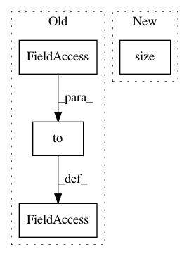

1118c16d3852beec9c0b18804d43a1fa01ef6786,examples/tgn.py,,,#,13
Before Change
time_dim=100),
aggregator_module=LastAggregator(),
embedding_module=IdentityEmbedding(memory_dim=100))
model = model.to(device)
optimizer = torch.optim.Adam(model.parameters(), lr=0.0001)
criterion = torch.nn.BCEWithLogitsLoss()
After Change
model = TGN(
data.num_nodes, data.x.size(-1), memory_dim=100, time_dim=100,
message_module=IdentityMessage(raw_msg_dim=data.x.size(-1), memory_dim=100,
time_dim=100),
aggregator_module=LastAggregator()).to(device)
In pattern: SUPERPATTERN
Frequency: 3
Non-data size: 4
Instances
Project Name: rusty1s/pytorch_geometric
Commit Name: 1118c16d3852beec9c0b18804d43a1fa01ef6786
Time: 2020-11-02
Author: matthias.fey@tu-dortmund.de
File Name: examples/tgn.py
Class Name:
Method Name:
Project Name: rusty1s/pytorch_geometric
Commit Name: e60669c5aa467d5c11a508c01b37c4ed8e352fa6
Time: 2021-02-15
Author: matthias.fey@tu-dortmund.de
File Name: torch_geometric/nn/conv/supergat_conv.py
Class Name: SuperGATConv
Method Name: forward
Project Name: arraiy/torchgeometry
Commit Name: 0af8eb6aa9c1b40e6805fd3dd84b65d101cb55f8
Time: 2020-06-09
Author: kuynzereb@gmail.com
File Name: kornia/geometry/warp/homography_warper.py
Class Name: HomographyWarper
Method Name: warp_grid